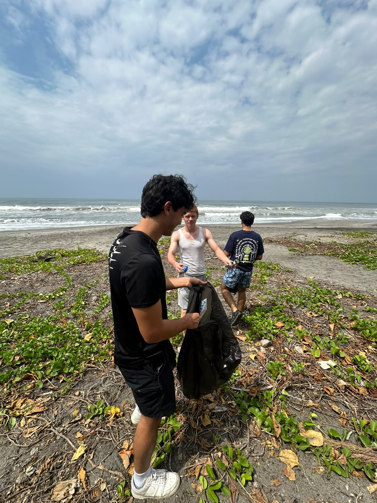
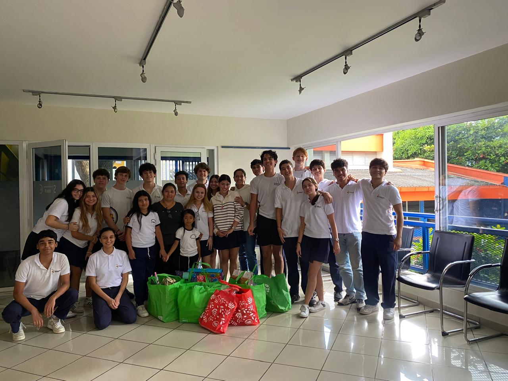
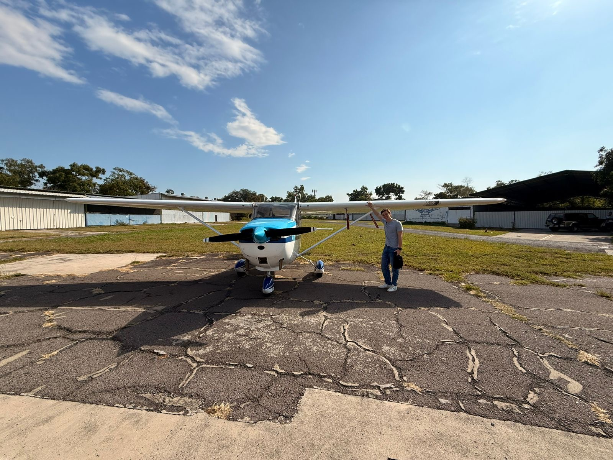

Curriculum
Work Experience
-
Summer Intern - Sistema Arquitectos SA de CV
Assisted in daily architectural operations and acquired basic proficiency in AutoCAD for project drafting and design structure.
Volunteer Work
-
Environmental Volunteer (100 Social Hours)
Participated in multiple weekend initiatives dedicated to cleaning and preserving the beaches of El Salvador.
-
Operation Hope - Volunteer
Collaborated with a local foundation to visit nursing homes, providing assistance, companionship, and support to the elderly.
Licenses, Certifications & Languages
-
Student Pilot License (In Progress)
Completed 35 flight hours towards official private pilot certification.
- Spanish: Native
- English: Fluent (IELTS Academic Certified)
- German: Upper Intermediate (B2 Level)